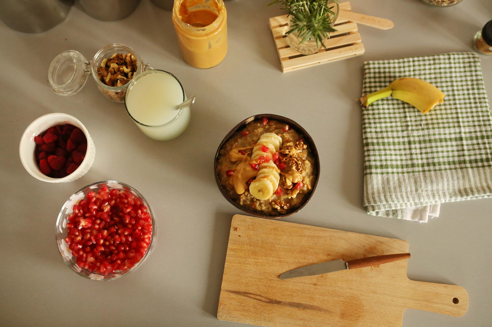

Simple, reliable recipes designed for beginners who want to master the bascis of the kitchen without the stress.

A one-pot Cajun classic.
Faster than delivery and better for you.
The ultimate easy dinner for a crowd.
Before you turn on the stove, chop all your vegetables and measure your spices. Professional chefs call this "mise en place," but we just call it making things easy on yourself!